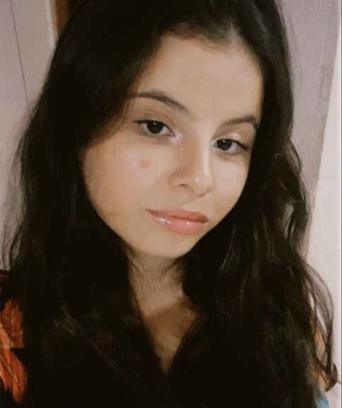

Sobre Mim
Meu nome é Shaylla Sthefany e sou uma desenvolvedora web especializada na área do front-end. Tenho habilidades sólidas em HTML e CSS para criar interfaces atraentes e funcionais. Além disso, sou fluente em linguagens de programação como C# e JavaScript.
Atualmente, desempenho o papel de gerente de desenvolvimento na NYC Developers. Nessa função, lidero equipes, estabeleço metas e asseguro a entrega de projetos de alta qualidade. Estou comprometida em impulsionar o sucesso da empresa e da equipe, sempre buscando a excelência e a inovação.
Formação
Técnica em Informática integrada ao Ensino Médio pelo Instituto Federal de Educação, Ciência e Tecnologia de Rondônia (IFRO), Graduada em Sistemas de Informação pela Universidade Federal de Minas Gerais (UFMG), Mestre em Design e Multimídia pela Universidade de Coimbra e Doutora em Ciência da Computação pela Universidade de Oxford (Reino Unido).
Experiência Profissional
- 2046-Atualmente - Desenvolvedora Front-End Sênior. NYC Developers, Estados Unidos.
- 2040-2045 - Pesquisadora em Inteligência Artificial, Oxford, Reino Unido.
- 2037-2040 - Professora Universitária em Ciência da Computação, IFRO, Brasil.
- 2031-2036 - Desenvolvedora Front-End Pleno, Farfetch, Portugal
- 2030-2034 - Pesquisadora em Design de Interfaces Interativas, Universidade de Coimbra, Portugal.
- 2026-2030 - Desenvolvedora Front-End Júnior. BraZip Tecnologia, Brasil.
.png)